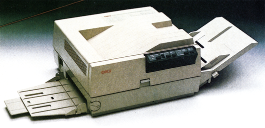
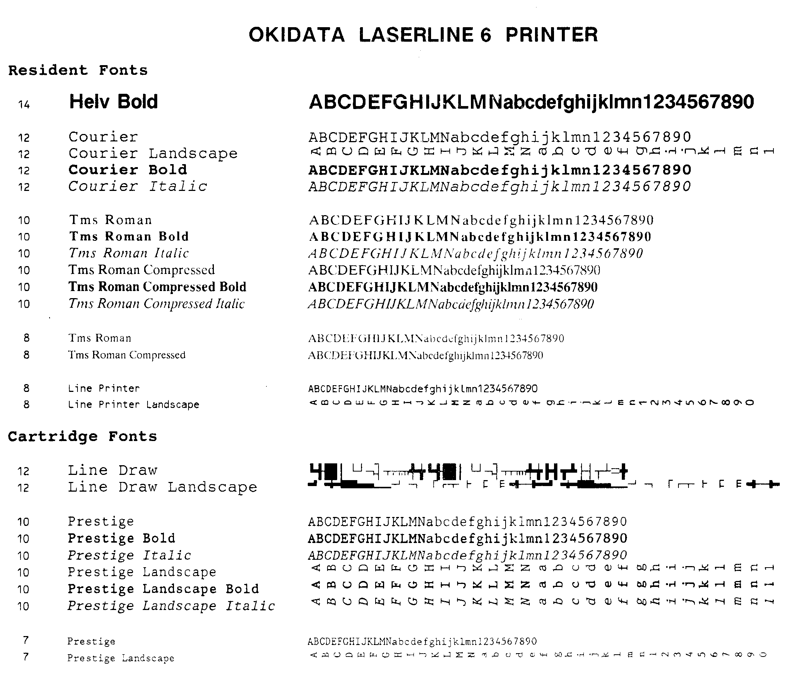

Kennen Sie Ihren Drucker? (Teil 5)
Wenn Sie Besitzer eines Oki-Druckers sind, werden Sie diese Folge besonders aufmerksam lesen, denn Oki hat uns in der Redaktion besucht. Im Praxisteil haben wir ein ganz besonderes Programm-»Bonbon« für alle Druckerbesitzer — die Erweiterung »Drucker-Basic« für den Commodore 64.
Haben Sie schon einmal eine vollautomatische Produktionsstätte gesehen? Über Fließbänder kommen Einzelteile, Baugruppen und Hilfsmaterialien. In langen Fertigungsstraßen, die nur seltenst ein Mensch betritt, werden durch tausende mechanischer, hydraulisch und elektrisch betriebener Roboterarme aus dem scheinbar sinnlosen Durcheinander fertige Drucker. Doch was hat das mit Oki zu tun? Nun, auf diese Weise entsteht ein Großteil der Oki-Drucker (bis zu 5000 Stück pro Tag in der automatischen Druckerfertigung), die nicht nur in Deutschland, sondern weltweit verkauft werden. Dabei ist die Deutsche Okidata GmbH ein relativ junges Unternehmen, denn es wurde erst Ende 1984 gegründet. Die japanische Muttergesellschaft, die Oki-Electric, gibt es allerdings schon seit dem letzten Jahrhundert. Während sich die Oki-Electric mit verschiedensten Aufgaben, wie beispielsweise der Fertigung von Telekommunikationsanlagen und elektronischen Bauteilen beschäftigt, ist die Hauptaufgabe von Okidata die Produktion und der Verkauf von Druckern.
Wenn Sie die Testberichte in der 64'er bislang verfolgt haben, so werden Sie bemerkt haben, daß wir bereits dreimal Testgeräte aus dem Hause Oki vorgestellt haben. Den Anfang hat der ML 182/183, den es mit Commodore- und Centronics-Schnittstelle gibt, gemacht (64'er, Ausgabe 4/86). Der ML 182/183 ist ein preiswerter Allround-Drucker, der sich besonders für den Einsteiger eignet. Das zweite Oki-Modell, das wir Ihnen vorgestellt haben, ist der, wegen seines geringen Preises und seiner Farbfähigkeit, sehr beliebte Okimate 20 (64'er, Ausgabe 5/86). Wir haben dem Okimate 20 damals das Urteil eines preisgünstigen, farbfähigen Zweitdruckers, beziehungsweise Einstiegsmodell für den hauptsächlich grafisch Interessierten gegeben. Mittlerweile ist der Okimate 20 auch in einer Btx-Version mit 125 Farben erhältlich. Für Commodore-Besitzer ist besonders erfreulich, daß es den Okimate 20 sowohl in einer Version mit Commodore-Schnittstelle als auch in einer Standard-Version mit Centronics-Schnittstelle, gibt.
Den dritten Testbericht über einen Oki-Drucker finden Sie in dieser Ausgabe, in der wir Ihnen den Oki ML 292 vorstellen, einen farbfähigen Schönschreibdrucker mit 18 Drucknadeln.
Laserdrucker von Oki
Diese drei Drucker stellen jedoch nur einen Teil des Produktprogramms von Okidata dar, dessen jüngstes Kind der im September in München vorgestellte Laserline 6 Laserdrucker (Bild 1) ist. Wie bereits die »6« im Namen des Laserline 6 andeutet, ist dieser Drucker in der Lage, bis zu sechs Seiten in der Minute zu drucken. Dies tut er nicht nur äußerst leise, sondern auch mit einer exzellenten Qualität (Bild 2), die mit der Druckqualität der Zeitschrift, die Sie gerade lesen, vergleichbar ist. Nun werden manche einen Laserdrucker preislich noch weit oberhalb 10000 Mark einordnen. Mit dem Laserline 6 hat Oki aber gezeigt, daß es auch preiswerter geht, dieser Drucker kostet einschließlich einem Centronics-Interface-Modul nur zirka 5600 Mark. Natürlich sind das Preisregionen, von denen man als privater Anwender in der Regel nur träumen kann, aber wenn man die Entwicklung der letzten Jahre betrachtet, so sind heute bereits Drucker erhältlich, die, bei wesentlich gesteigerter Leistungsfähigkeit, nur noch einen Bruchteil dessen kosten, was man für einen Matrixdrucker noch vor vier bis fünf Jahren anlegen mußte. Die immer größere Nachfrage nach leisen, leistungsfähigen Druckern, die sich auch zum beruflichen Einsatz verwenden lassen, wird hier sicherlich nicht ohne Wirkung auf die Entwicklung der Preise bleiben. Aber auch für diejenigen, die vorläufig noch auf einen Hochleistungs-Nadelmatrixdrucker setzen, hat Oki einen Drucker im Programm, den Microline 294. Mit seinen 400 Zeichen pro Sekunde Druckgeschwindigkeit, seiner Flexibilität, Farb- und sehr guter Grafikfähigkeit ist er hauptsächlich für den professionellen Einsatz gedacht.


Oki am Draht
Wie immer in unserem Druckerkurs ist es uns ein großes Anliegen, den Kontakt zwischen Ihnen und dem Vorstellungsgast herzustellen. Auch bei Oki hat man sich natürlich nicht nur darüber Gedanken gemacht, wie man Drucker verkauft, sondern auch darüber nachgedacht, wie man dem Kunden bei seinen Problemen am besten helfen könnte. Man hat sich dazu entschlossen, dem Kunden drei Wege zu öffnen: Zum einen können Oki-Drucker direkt vom Fachhandel repariert und gewartet werden. Daneben hat jeder Oki-Kunde, ganz gleich wo er seinen Drucker gekauft hat, die Möglichkeit, seinen Drucker direkt an Oki (Anschrift am Ende des Artikels) zum Service zu schicken. Wer nur eine Frage hat, oder neueste Informationen zu Oki-Produkten haben möchte, kann sich auch direkt an Frau Breuer, die Betreuerin der Oki-Hotline unter der Telefonnummer 0211-59794-78, wenden. Frau Breuer wird bemüht sein, bei allen Fragen und Problemen schnell und unbürokratisch Auskunft zu geben, beziehungsweise zu helfen.
| Befehl | Funktion | Parameter |
|---|---|---|
| OPN | Öffnen eines Drucker-Kanals zur Übertragung von Escape-Sequenzen | keine |
| CLS | Schließen des mit OPN geöffneten Kanals | keine |
| CR | Carriage-Return (Wagenrücklauf) | keine |
| PF a,n | Paper-Feed (Einstellen des Zeilenabstands) | Bei a=6 fällt n weg; 1/6 Zoll Zeilenabstand, bei a=8 fällt n weg; 1/8 Zoll, bei a=72 werden n/72 Zoll Zeilenabstand eingestellt, bei a=216 schließlich n/216 Zoll |
| LF | Line Feed (Zeilenvorschub) | keine |
| BACK n | Drucken und Papiertransport rückwärts | Rückwärtstransport um n/216 Zoll |
| AHEAD n | Drucken und Papiertransport vorwärts | Vorwärtstransport um n/216 Zoll |
| PAGE a,n | Seitenlänge in Zeilen oder Zoll festlegen | Bei a=1 wird die Seitenlänge auf n Zeilen festgelegt (1-127) Bei a=2 wird die Seitenlänge auf n Zoll festgelegt (1-22) |
| FF | Seitenvorschub | keine |
| JUMP a,n | Überspringen der Perforation | Bei a=0 fällt n weg; es wird kein Perforationssprung durchgeführt Bei a=1 wird ein automatischer Perforationssprung um n Zeilen durch geführt (1-127) |
| VT | Ausdrucken der im Puffer befindlichen Daten und Transport zu einer vorher festgelegten vertikalen Tabulatorposition | keine |
| VFU n | VFU Kanal bestimmen | Kanalnummer n (0-7) |
| RIGTH n | Rechten Rand setzen | n=Anzahl der Schreibstellen (1-255) |
| LEFT n | Linken Rand setzen | n=Anzahl der Schreibstellen (0-255) |
| HT | Ausführung vorher festgelegter horizontaler Tabs | keine |
| LARGE n | Breitschrift | n=0 bedeutet ausschalten; n=1 bedeutet einschalten |
| SI n | Komprimierte Schrift | siehe LARGE |
| EMPH n | Emphasized Printing (Fettdruck) | siehe LARGE |
| DOUBLE n | Doppeldruck | siehe LARGE |
| ELITE | Schriftart = Elite | keine |
| PICA | Schriftart = Pica | keine |
| SUPER n | Superscript | siehe LARGE |
| SUB n | Subscript | siehe LARGE |
| UNDERLINE | n Unterstreichen | siehe LARGE |
| MODE n | Bestimmung der Druckart (entspricht ESC!+n) | n=Druckart (0-61) |
| PROP n | Proportionalschrift | siehe LARGE |
| INKR n | Inkrementales Drucken (Jedes Zeichen wird sofort gedruckt) | siehe LARGE |
| CHRERW n | Zeichenerweiterung (ESC I+n) | siehe LARGE |
| SELECT | Setzt Drucker in Select-Status | keine |
| DESELECT | Setzt Drucker in Deselect-Status | keine |
| DELLIN | Delete Line (Löschen einer Zeile) | keine |
| DELCHR | Delete Character (Löschen eines Zeichens) | keine |
| CS n | Frei ladbarer Zeichensatz | siehe LARGE |
| COPY | Kopieren des internen in den frei ladbaren Zeichensatz | keine |
| NLQ | Near Letter Quality | siehe LARGE |
| DENSITY a,n | Bit-Image-Graphik | Bei a=1 wird einfache Dichte eingestellt, bei a=2 doppelte Dichte, bei a=3 doppelte Dichte, doppelte Geschwindigkeit, bei a=4 vierfache Dichte n ist in jedem Falle die Anzahl der Daten |
| CRT a,n | Bit-Image-Graphik (CRT-Grafik) | Bei a=1 wird die CRT-Grafik mit 640 Punkten/8 Zoll eingestellt, bei a=2 mit 720 Punkte/8 Zoll. n=Anzahl der Daten. |
| PLOTTER n | Plotter — Grafik bestimmen (576 Punkte/8 Zoll) | n=Anzahl der Daten |
| NINE a,n | Neun-Nadel-Bit-Image-Grafik | Bei a=1 : einfache Dichte, bei a=2 : doppelte Dichte. n=Anzahl der Daten |
| INIT | Drucker initialisieren | keine |
| PAPER n | Papierendeerkennung | siehe LARGE |
| BEL | Summer | keine |
| BS | Backstep (Rückwärtsschritt) | keine |
| RET | Druckkopf in Ausgangsstellung | keine |
| UNI n | Unidirektionaler Druck | siehe LARGE |
| SLOW n | Halbe Druckgeschwindigkeit | siehe LARGE |
| ITALIC | Kursivschrift | siehe LARGE |
| USA FRANCE GERMANY BRITAIN DANMARK SWEDEN ITALY SPAIN JAPAN |
Internationalen Zeichensatz wählen | keine |
| MSBOFF | MSB Steuerung löschen | keine |
| MSB n | Höchstwertiges Bit eines Datenwortes | Bei n=0 wird das Bit 0, bei n=1 wird es 1 |
Das Drucker-Basic
Es gibt Basic-Erweiterungen für die verschiedensten Zwecke. Am bekanntesten ist wohl Simons Basic oder auch unser Hypra Basic, es gibt sogar ein eigenes Mailbox-Basic zum Konstruieren einer Mailbox. Doch alle diese Erweiterungen behandeln die Druckerausgabe mehr oder weniger stiefmütterlich. Doch was ein richtiger Drucker-Freak ist, dem ist das bei weitem zu wenig, denn viele Funktionen des Druckers lassen sich leider nur sehr kompliziert und speicherplatzaufwendig programmieren. Hier hilft das Drucker-Basic, denn es stellt 58 neue Befehle zur Verfügung, mit denen die Programmierung des Druckers jeden Schrecken verliert. Das Drucker-Basic ist hauptsächlich für die Besitzer von Druckern, die nach dem ESC/P-Standard angesprochen werden, programmiert. Besitzer anderer Drucker können leider nur einen eingeschränkten (je nach Drucker unterschiedlich) Teil der Befehle verwenden. Hier hilft allerdings nur Probieren. Die Besonderheit des Drucker-Basic liegt darin, daß es als Maschinenprogramm den normalen Ablauf eines Basic-Programms nicht verlangsamt und sich deshalb als Unterprogramm zur Druckersteuerung in eigene Programme einbinden läßt. Wenn Sie das Programm (Listing 1) mit dem MSE eingegeben haben, sollten Sie es zunächst speichern. Dann wird es absolut mit "Drucker-Basic",8,1 geladen und nach Eingabe von NEW mit SYS 40855 gestartet. Für Ihre Basic-Programme stehen Ihnen nun 38 802 Bytes und zusätzliche Kommandos zur Verfügung (Tabelle 1).
Mit Hilfe des Programms »Interface« (Listing 2) können die Kanalnummer, die Geräteadresse und die Sekundäradresse der Datei, die zur Übertragung der Anweisungen benutzt wird, verändert werden. Hier müssen die Werte eingegeben werden, die Ihr Interface in den Direktmodus (es werden keine Codewandlungen durchgeführt) bringt. Voreingestellt sind hier:
Dateinummer:255
Geräteadresse:4
Sekundäradresse:1
Um die Variablenzuweisung beim Drucker-Basic nicht unnötig zu verlangsamen, sollte man den LET-Befehl jetzt nicht mehr weglassen. Statt A=1 sollte bei Verwendung der Erweiterung LET A=1 geschrieben werden.
Assembler-Programmierern wird es sicher sehr gefallen, daß auch zusätzliche Kommandos in Drucker-Basic integriert werden können. In der Befehlstabelle wurde dafür noch Platz gelassen. Sie liegt, wie ein Großteil des Programms, ab $A001 unter dem Basic-ROM. Von $A702 bis $A200 steht noch Freiraum zur Verfügung. Die Worte müssen in ASCII-Code eingegeben werden, wobei zum letzten Buchstaben $80 hinzugefügt werden muß. Die darauffolgenden 2 Byte stellen die Startadresse dar. Nun fehlt nur noch eine Änderung: das Low-Byte des Endes der Tabelle in $A282 und das High-Byte in $A289 müssen in die Adresse des letzten Buchstabens des letzten Befehlswortes umgeändert werden (es handelt sich um ein Zeichen, zu dem $80 addiert wurde). Die Fehlerbehandlung erfolgt mit JSR 9FD9 (Fehlernummer im Akkumulator). Die Get-Byte-Routine liegt bei 9FB8 (Ergebnis=X Reg.), die Get-Adress-Routine bei 9FCC (Ergebnis = $14/$15) und schließlich die Check-Komma-Routine bei 9FC2. Nach Ausführung eines Kommandos muß nach 9FA6 gesprungen werden.
(Arno Baumfalk/aw)Info: Okidata GmbH, Hansa-Allee 187, 4000 Düsseldorf 11, Tel. 0211/59794-0